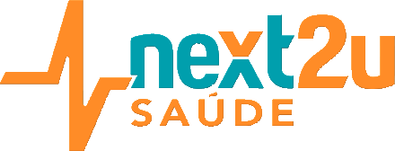

A wristband, an Android app and a 158-rule clinical engine that tell the care team who is getting worse, before it becomes a hospitalization.
of adults in Brazilian state capitals report a hypertension diagnosis (2024).
of adults report diabetes, more than double the 5.5% of 2006.
deaths from chronic non-communicable diseases in 2019, 54.7% of all deaths in Brazil.
Community health teams see a patient every few weeks. Blood pressure, oxygen saturation and heart rate in between are unknown.
Many hospitalizations of hypertensive, diabetic, kidney, lung and liver patients are classed as sensitive to primary care: avoidable if caught early.
A low-cost BLE wristband measures heart rate, SpO2, blood pressure, temperature and sleep. The Android app uploads readings and queues them offline when there is no signal.
Each reading is checked against 158 base alerts, expanded to 971 patterns by hospitalization risk, active diseases and medication. A score or a drug alone never fires an alert.
The UBS panel ranks patients by alert priority, inside the team's own territory. Every alert is decision support: the clinician decides the conduct.
Outcome we are built for: fewer avoidable hospitalizations and earlier home visits for the patients who need them.
HBand / Veepoo SDK or any watch with the standard Bluetooth health profile.
Kotlin Android app, pairing, offline outbox, retries.
Scoped API keys, rate limiting, per-patient authorization, idempotent writes.
158 rules → 971 patterns, weighted by risk, disease and medication.
Territory-scoped view; separates HTTP, simulated and physical-device data.
HL7 FHIR R4 export (Patient, Observation, Device, Flag, Bundle).
Bronze / Silver / Gold lakehouse on Google Cloud: Cloud Run, BigQuery, Cloud Storage.
Hashed identifiers, territory-based access, LGPD impact report and incident plan.
| Priority | Base alerts | Branches | Patterns |
|---|---|---|---|
| ★ Mild | 43 | 7 | 301 |
| ★★ Moderate | 70 | 7 | 490 |
| ★★★ Severe | 45 | 4 | 180 |
| Total | 158 | — | 971 |
Mild and moderate alerts are promoted only with confirmation, persistence, a second parameter or an additional clinical sign.
Multimorbidity, heart or liver failure, cancer, polypharmacy, recent admission, cognitive impairment and social isolation set the patient's baseline tier, from standard follow-up to intensive home care.
municipalities in Brazil, each responsible for primary care in its territory (IBGE).
adults in the capitals lives with hypertension or diabetes, the core of the UBS chronic-care caseload.
Monitored patients per municipality × price per patient per month. Our first segment: high-risk tiers (score ≥ 11) that need telemetry.
[Fill: price/patient/month and target TAM]
Primary care is organized by territory and health unit, which maps directly to our access model and alert routing. Avoidable admissions are a cost the municipality and the state pay.
The same engine and API serve health plans and hospital-at-home programs once the public-sector pilot produces outcome data.
Per active monitored patient per month: app, ingest, alert engine, panel, support.
[Fill: price]
Wristband supplied at cost or through the municipality's own purchase. We stay device-agnostic.
Protocol set-up per pathway, team training and integration with the municipal health record via FHIR.
Paid pilot with one municipality → outcome report → public procurement or innovation partnership → neighboring municipalities and regional health consortia.
Serverless API on Cloud Run with per-request pricing; the rule engine runs on CPU.
[Fill: cost/patient/month and target margin]
Stage: pre-revenue. Simulated-device sessions are not counted as pilot data.
A temporal convolutional network (PyTorch) forecasts deterioration at 6, 24 and 72 hours. We keep it out of the product because training and real-world results diverge:
F1 on training data · 0.98
F1 on real labels (5 patients, 752 sequences) · 0.64
We will expose a predictive horizon only after patient-level validation on people outside the training set.
The alert matrix stays the source of truth for the pilot. AI adds value when it beats the rules on real patients, not before.
| Consumer wearable apps | Telehealth platforms | Hospital RPM suites | next2u SAÚDE | |
|---|---|---|---|---|
| Continuous home vital signs | ● | ○ | ● | ● |
| Clinical rules by chronic pathway | ○ | ◐ | ● | ● |
| Territory / UBS access model | ○ | ○ | ○ | ● |
| Device-agnostic, low-cost hardware | ○ | ◐ | ○ | ● |
| FHIR R4 interoperability | ○ | ◐ | ● | ● |
| Priced for municipal budgets | ◐ | ◐ | ○ | ● |
● yes · ◐ partial · ○ no. Category-level comparison; individual vendors vary.
Every alert is named "Possible…" and carries decision support, never a mandatory conduct. A risk score, disease or drug alone cannot trigger an alert.
Data protection impact report, processing record, retention policy and incident response plan. Identifiers are hashed; access is limited to the patient's territory.
Scoped API keys, rate limiting, anti-IDOR checks per patient, idempotent ingest, dependency audits in CI.
Regulatory path: classification under ANVISA RDC 657/2022 for software as a medical device is part of the pilot workstream. We do not claim certification today.
[Role]
[One line of background]
[Role]
[One line of background]
[Role]
[One line of background]
[Role]
[One line of background]
Clinical advisors: [Fill: names and specialties]
Field pilots: devices, deployment, municipal support [%]
Clinical validation: prospective study, patient-level evaluation [%]
Regulatory and privacy: ANVISA, LGPD, security audit [%]
Team: engineering, clinical lead, sales to the public sector [%]
Bar lengths are illustrative until the allocation is set.
next2u.com.br · [contact e-mail]